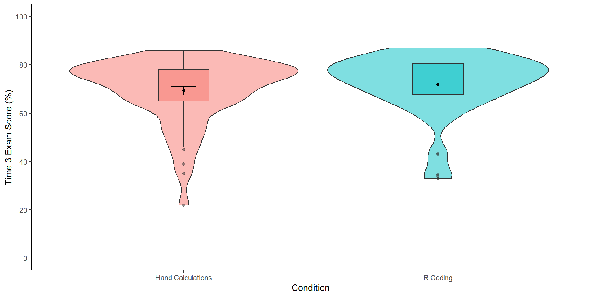

A whole lotta nothing: Comparing statistical approaches to supporting the null
Dr James Bartlett
Overview
Inferences and dichotomous decisions
Target data set: A Comparison of Students’ Statistical Reasoning After Being Taught With R Programming Versus Hand Calculations
How do our inferences change depending on the approach?
Equivalence testing
Bayes factors
Bayesian ROPE
Suitability of the null hypothesis in NHST
Is the point-null plausible? Would rejecting the null be surprising? Do you want to make decisions about how to act with a given error rate? (Lakens, 2021)
Meehl’s paradox: With increasing sample size, its easier to confirm a hypothesis via rejecting a point-null (Kruschke & Liddell, 2018)
Crud factor: In non-randomised studies, we might expect non-null effects (Orben & Lakens, 2020), but would they be meaningful?
Supporting the null
There are scenarios when supporting the null is a desirable inference
People want to make the conclusion there is no meaningful effect, but use methods unsuited to that inference (Aczel et al., 2018)
The role of dichotomous decisions
- We want to make decisions about whether observations fit statistical and substantive hypotheses, so its important to think about what would falsify those hypotheses

Figure from (Tunç et al., 2023)
Approaches to probability and inference
Frequentist
Bayesian
Today’s example
Technology or Tradition? A Comparison of Students’ Statistical Reasoning After Being Taught With R Programming Versus Hand Calculations (Ditta & Woodward, 2022)
Compared conceptual understanding of statistics at the end of a 10-week intro course
Students completed one of two versions:
Formula-based approach to statistical tests (n = 57)
R code approach to statistical tests (n = 60)
Research question: Does learning through hand calculations or R code lead to greater conceptual understanding of statistics?
Between-subjects IV: Formula-based or R code approach course
DV: Final exam (conceptual understanding questions) score as proportion correct (%)
What are we working with?
Their main results
- Their first approach to the analysis was a simple independent samples t-test:
Welch Two Sample t-test
data: e3total by condition
t = -1.117, df = 110.97, p-value = 0.2664
alternative hypothesis: true difference in means between group HC and group R is not equal to 0
95 percent confidence interval:
-7.584355 2.116173
sample estimates:
mean in group HC mean in group R
69.29091 72.02500 What now?
- We can’t reject the null using a traditional t-test, but how can we test if there was no meaningful difference?
Keeping frequentist
- Equivalence testing
Going Bayesian
Bayes factors (the authors report these)
Bayesian Region of Practical Equivalence (ROPE)
1. Equivalence testing
- Equivalence testing flips the NHST logic and uses one-sided t-tests to test two bounds, allowing four decisions:

Figure from Lakens (2017)
TOSTER R package
Flexible package (Lakens & Caldwell) that can apply equivalence testing to focal tests like t-tests, correlations, meta-analysis
Comes with its own power analysis functions for equivalence tests
Key decisions to make
What alpha to use?
What values to use for the smallest effect size of interest bounds?
- Using bounds of �10%, we can conclude the effect is statistically equivalent and not significantly different to 0:
Welch Modified Two-Sample t-Test
The equivalence test was significant, t(110.97) = 2.968, p = 1.83e-03
The null hypothesis test was non-significant, t(110.97) = -1.117, p = 2.66e-01
NHST: don't reject null significance hypothesis that the effect is equal to zero
TOST: reject null equivalence hypothesis
TOST Results
t df p.value
t-test -1.117 111 0.266
TOST Lower 2.968 111 0.002
TOST Upper -5.203 111 < 0.001
Effect Sizes
Estimate SE C.I. Conf. Level
Raw -2.7341 2.4477 [-6.7941, 1.3259] 0.9
Hedges's g(av) -0.2073 0.1921 [-0.513, 0.0993] 0.9
Note: SMD confidence intervals are an approximation. See vignette("SMD_calcs").- We can also get a fancy plot showing the equivalence test for both raw and standardised units:
- However, if we use bounds of � 5%, the difference is not equivalent and not significantly different to 0
What’s our inferences so far?
t-test: Not significantly different to 0
Equivalence test: Statistically equivalent using bounds of �10%, but not �5%
Bayes factor: …
Bayesian ROPE: …
2. Bayes factors
- Brief overview of Bayes factors
BayesFactor R package
- Package (Morey & Rouder, 2021) that can apply Bayes factors to t-tests, ANOVA, and regression models etc.
Key decisions to make
What is your prior for the alternative hypothesis (Cauchy distribution over 0 where you control the width)?
One- or two-tailed test?
- Using the default prior, we have weak evidence in favour of the null hypothesis:
Bayes factor analysis
--------------
[1] Null, mu1-mu2=0 : 2.872235 ±0.02%
Against denominator:
Alternative, r = 0.707106781186548, mu =/= 0
---
Bayes factor type: BFindepSample, JZSRough guidelines (Van Doorn et al. (2021))
BF > 1 = Weak evidence
BF > 3 = Moderate evidence
BF > 10 = Strong evidence
We get somewhat consistent conclusions of weak to moderate evidence in favour of the null for a range of priors:
| Prior | Bayes factor |
|---|---|
| Medium | 2.87 |
| Wide | 3.84 |
| Ultrawide | 5.25 |
What’s our inferences so far?
t-test: Not significantly different to 0
Equivalence test: Statistically equivalent using bounds of �10%, but not �5%
Bayes factor: Weak to moderate evidence in favour of the null hypothesis compared to the alternative
Bayesian ROPE: …
3. Bayesian ROPE
- Outline Bayesian modelling
- Similar to equivalence testing, creates three decisions: 1) HDI outside ROPE, 2) HDI within ROPE, 3) HDI and ROPE partially overlap

Figure from Masharipov et al. (2021)
brms and bayestestR packages
brms (Bürkner, 2017) provides flexible Bayesian modelling
bayestestR (Makowski et al., 2019) for helpful summary and plotting functions
Key decisions to make
Prior for each parameter
Boundaries for ROPE
We can get a summary of our intercept and coefficient from the Bayesian regression model
The 95% HDI for the coefficient (mean difference) is entirely within ROPE bounds of �10%,
Summary of Posterior Distribution
Parameter | Median | 95% CI | pd | ROPE | % in ROPE | Rhat | ESS
----------------------------------------------------------------------------------------------
(Intercept) | 69.46 | [65.97, 72.91] | 100% | [-10.00, 10.00] | 0% | 1.000 | 3727.00
condition | 2.68 | [-1.80, 7.55] | 86.12% | [-10.00, 10.00] | 100% | 1.000 | 3930.00- We can even demonstrate it via a fancy plot of the ROPE and posterior distribution for the coefficient
- Like equivalence testing though, we’re undecided based on smaller ROPE bounds of �5%, so we would need more data
What’s our inferences so far?
t-test: Not significantly different to 0
Equivalence test: Statistically equivalent using bounds of �10%, but not �5%
Bayes factor: Weak to moderate evidence in favour of the null hypothesis compared to the alternative
Bayesian ROPE: We can accept the ROPE of �10% around the coefficient posterior, but not �5%.
Where to go next
New (work in progress) PsyTeachR book where chapters 9 and 10 cover Bayes factors / modelling
Comparing equivalence testing and Bayes factors (Lakens et al., 2020)
Introduction to Bayes and ROPE (Kruschke & Liddell, 2018)
Comparing frequentist vs Bayesian modelling (Flores et al., 2022)
Discussion
Thank you for listening!
Any questions?
What is your preferred approach?
Technical details
Equivalence testing process
What do the priors mean in BF?
Modelling process in brms